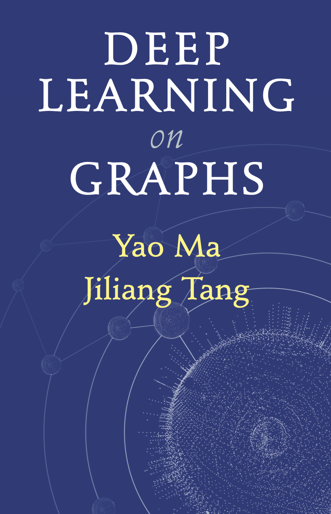

|  | This book covers comprehensive contents in developing deep learning techniques for graph structured data with a specific focus on Graph Neural Networks (GNNs). The foundation of the GNN models are introduced in detail including the two main building operations: graph filtering and pooling operations. We then discuss the robustness and scalability of the GNNs, which are extremely important for utilizing GNNs for real-world applications. To enable deep learning techniques to advance more graph tasks under wider settings, we introduce numerous deep graph models beyond GNNs. We also present the most representative applications of GNNs in different areas such as Natural Language Processing, Computer Vision, Data Mining and Healthcare. The book is also self-contained, we include chapters for introducing some basics on graphs and also on deep learning. We conclude the book with recent advances of GNNs in both methods and applications. |
English Version: Yao Ma and Jiliang Tang
Chinese Version: Yiqi Wang, Wei Jin, Yao Ma and Jiliang Tang
This material is officially published by Cambridge University Press as Deep Learning on Graphs by Yao Ma and Jiliang Tang. This pre-publication version is free to view and download for personal use only. Not for re-distribution, re-sale or use in derivative works. © Yao Ma and Jiliang Tang 2020
Chapter 1 Deep Learning on Graphs: An Introduction [Introduction]
Chapter 2 Foundations of Graphs [Introduction]
Chapter 3 Foundations of Deep Learning [Introduction]
Chapter 4 Graph Embedding [Introduction]
Chapter 5 Graph Neural Networks [Introduction]
Chapter 6 Robust Graph Neural Networks [Introduction]
Chapter 7 Scalable Graph Neural Networks [Introduction]
Chapter 8 Graph Neural Networks on Complex Graphs [Introduction]
Chapter 9 Beyond GNNs: More Deep Models on Graphs [Introduction]
Chapter 10 Graph Neural Networks in Natural Language Processing [Introduction]
Chapter 11 Graph Neural Networks in Computer Vision [Introduction]
Chapter 12 Graph Neural Networks in Data Mining [Introduction]
Chapter 13 Graph Neural Networks in Biochemistry and Healthcare [Introduction]
Chapter 14 Advanced Topics in Graph Neural Networks [Introduction]
Chapter 15 Advanced Applications in Graph Neural Networks [Introduction]